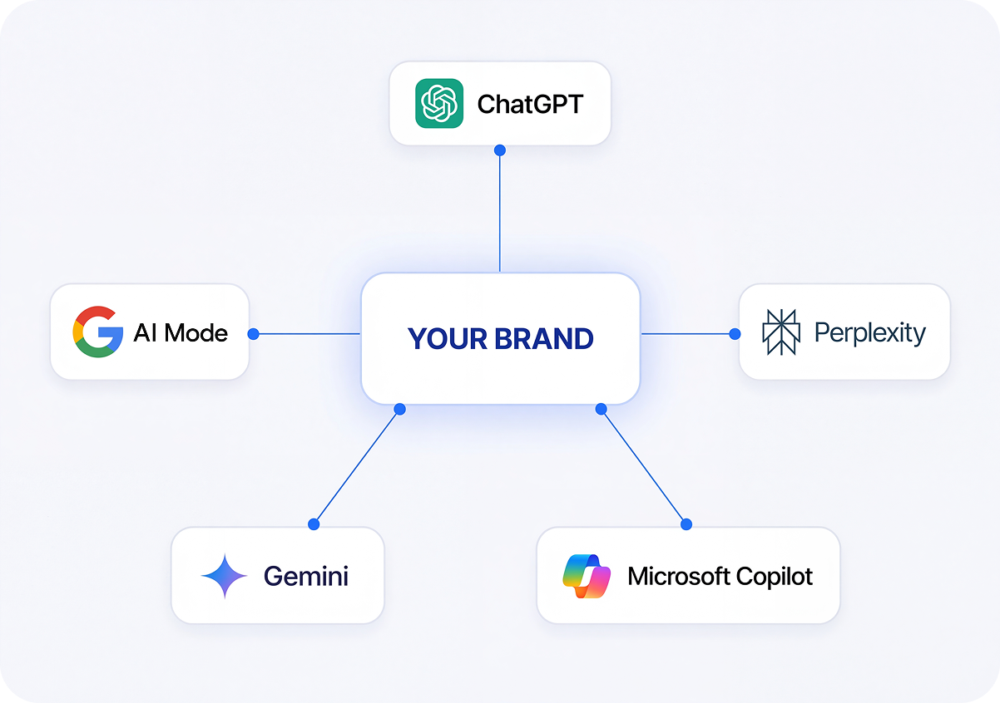
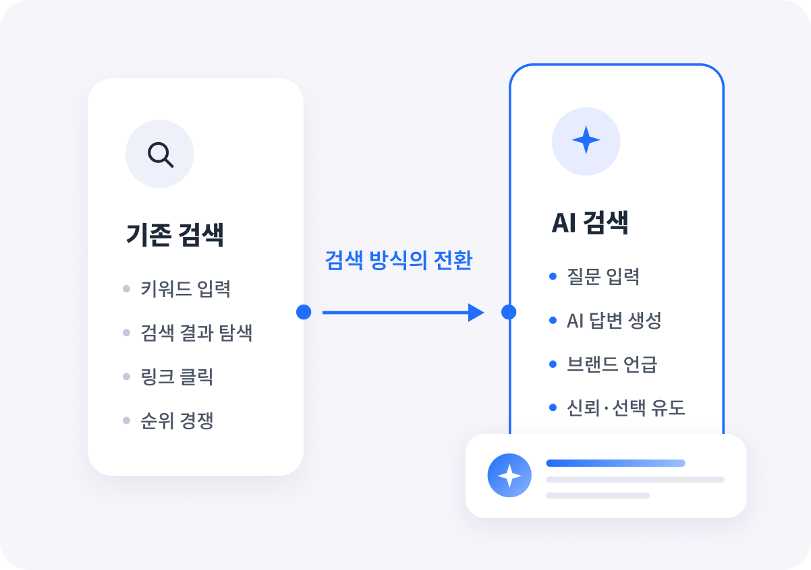
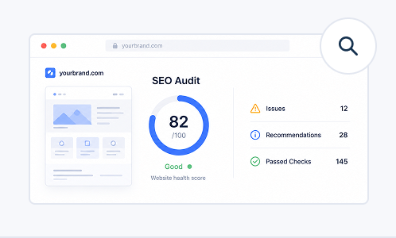
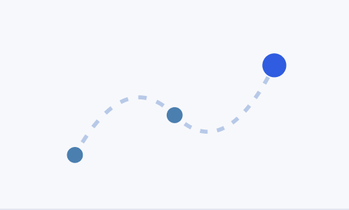
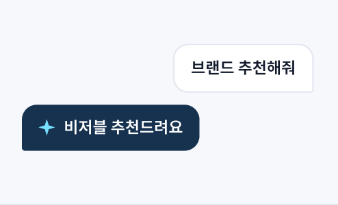
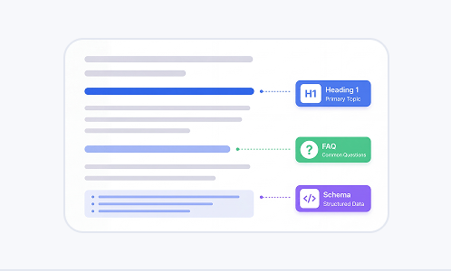
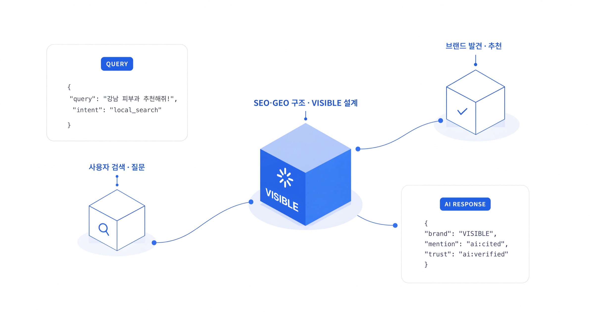

WHY GEO NOW
고객은 이미 '검색'이 아닌 'AI의 추천'을 듣고 있습니다

.png)
Google · Naver · ChatGPT · Gemini 등 검색과 생성형 AI 환경에서
브랜드가 발견될 수 있도록 SEO·GEO 구조를 설계합니다.
WHY GEO NOW
검색 순위만 관리하는 것이 아니라 ChatGPT, Google,
Perplexity, Gemini, Copilot 같은 플랫폼의 답변 흐름 속에서
브랜드가 자연스럽게 노출되도록 구조를 설계합니다.


NEW ERA
사용자들은 더 이상 링크 목록을 탐색하지 않습니다.
AI가 이해하고 신뢰할 수 있는 정보가 답변으로 선택됩니다.
브랜드는 단순한 키워드 최적화를 넘어, AI가 이해하고
인용할 수 있는 구조로 콘텐츠와 정보를 설계해야 합니다.
AI 생성형 답변과 검색엔진 내 브랜드 노출 현황을 무료로 정밀 진단해 드립니다.
검색과 AI 환경에서 브랜드가 발견되도록 설계하는
4가지 핵심 서비스를 제공합니다.

현재 브랜드의 검색 구조와 기술적 SEO 상태를 전면 진단합니다. 문제점과 기회 요인을 명확하게 파악합니다.

진단 결과를 기반으로 검색 상위노출을 위한 구체적인 전략과 실행 로드맵을 수립합니다.

ChatGPT, Gemini, Perplexity 등 생성형 AI가 브랜드를 인식하고 추천하도록 AI 최적화 구조를 설계합니다.

검색엔진과 AI 모두가 신뢰하는 콘텐츠 구조를 설계하고, 기존 콘텐츠를 전략적으로 리뉴얼합니다.
전략 없는 실행은 결과를 만들지 못합니다.
대부분의 브랜드는 방향 없이 콘텐츠를 쌓아왔습니다.
디자인·SNS 중심 대행사가 검색까지 담당하면서 구조적 SEO 최적화가 누락됐습니다.
기존 SEO 방법론은 AI 검색 환경에 대응하지 못합니다. 새로운 전략이 필요합니다.
단순 순위 올리기에만 집중하느라 브랜드 신뢰도와 권위성 구축을 놓쳤습니다.
콘텐츠팀과 개발팀이 따로 움직이면서 시너지가 없는 상태로 예산이 낭비됐습니다.
OUR DIFFERENCE
검색엔진 순위만 쫓는 것이 아니라, AI가 브랜드를 이해하고 인용하도록 구조를 설계합니다.
VISIBLE은 GEO·AEO 전문성을 바탕으로 처음부터 다른 접근을 제공합니다.
VISIBLE의 SEO·GEO 프레임워크는 검색엔진과 AI가
브랜드를 신뢰하고 추천하도록 설계된 구조입니다.

사이트 구조, 로딩 속도, 크롤링 최적화
E-E-A-T 기반 전문성·신뢰성 구축
생성형 AI가 인식하는 브랜드 신호 설계
월별 측정·개선 사이클 운영
브랜드 규모와 목적에 맞는 최적의 패키지를 선택하세요.
협의
현재 검색·AI 노출 현황을 전면 분석하고 개선 로드맵을 제공합니다.
협의
진단부터 전략 수립, 실행까지 전담 전문가 팀이 일관되게 밀착 수행하는 통합 서비스입니다.
협의
검색 및 AI 생태계 전반에서 브랜드 시장 지배력을 전면 구축·유지하는 전담 파트너십 서비스입니다.
기존 SEO의 한계를 뛰어넘어, AI 검색 시대에 맞춘 VISIBLE만의 인텔리전스 솔루션을 제시합니다.
SEO 키워드 순위는 높지만, ChatGPT·Gemini 답변에서는 브랜드가 전혀 언급되지 않는다.
AI가 브랜드를 이해하고 인용하도록 설계하는 GEO 콘텐츠 구조를 제공합니다.
기존 SEO 방식만으로는 생성형 AI(AEO/GEO)의 답변 알고리즘에 대응하기 어렵다.
진단부터 실행까지 한눈에 확인할 수 있는 AI 노출 진단 리포트를 제공합니다.
콘텐츠는 꾸준히 발행하지만, AI가 학습하거나 답변 출처로 인용하지 않는다.
AI 언급·유입·전환을 함께 추적하는 통합 성과 리포트를 제공합니다.
INSIGHTS
FAQ
SEO(검색엔진 최적화)는 구글·네이버 등 전통적인 검색엔진에 브랜드를 최적화하는 작업입니다. GEO(생성형 AI 최적화)는 ChatGPT, Gemini, Perplexity 같은 AI 검색 엔진이 브랜드를 인식하고 추천하도록 설계하는 새로운 영역입니다. 현재 검색 환경에서는 두 가지를 함께 다루는 것이 필수입니다.
기술 SEO 개선은 2~4주 내에 크롤링 개선 효과가 나타납니다. 검색 순위 변화는 통상 3~6개월이 소요됩니다. AI 검색에서 브랜드가 언급되기 시작하는 것은 콘텐츠 구조 설계 후 2~3개월이 일반적입니다. 브랜드와 분야에 따라 차이가 있어 진단 후 구체적인 타임라인을 제시드립니다.
네, 가능합니다. SEO·GEO는 광고, SNS, 콘텐츠 마케팅과 병행할 때 시너지가 큽니다. 현재 진행 중인 마케팅 현황을 공유해 주시면, 중복 없이 보완하는 방향으로 전략을 수립합니다.
진단 리포트는 1회성 프로젝트로 진행됩니다. 실행 서비스는 최소 3개월 단위로 시작하며, 성과에 따라 6개월·12개월 계약으로 전환하는 경우가 많습니다. 특정 목표 기간이 있으시면 상담 시 말씀해 주세요.
B2B 서비스업, 전문직(법률·의료·컨설팅), SaaS, 이커머스, 교육 분야에서 특히 높은 효과를 보이고 있습니다. 검색을 통해 고객이 유입되는 구조라면 업종에 관계없이 효과적입니다. 무료 진단을 통해 적합 여부를 먼저 확인해 드립니다.